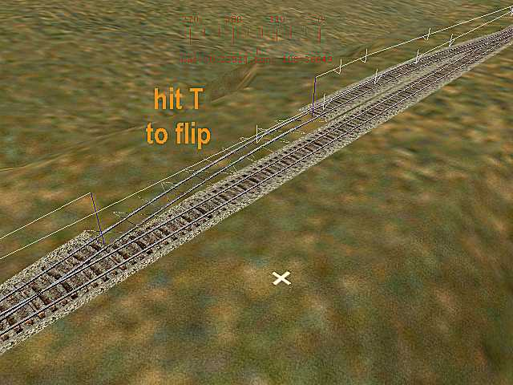

Constructing a Passing Siding
by Jim "Sniper397" Ward
The Process
This is one of those things everybody thought you already knew, so it hasn't been discussed much.
The end point curve sections, left and right, are very slightly different from each other, and each one is designed to go with the switch with the same orientation. In other words, left switch, end point left, right switch, end point right. After starting a passing siding from the right, I place 2 10 meter straight sections at the end of the doubletrack section (shortened for illustration purposes) to correspond to the length of the end point curve. I place a left switch on the end of the 10 meter straights, and hit the T key to flip it around pointing back at the siding. Since the switch curves to the left, I want the track to curve back to the right, so I select an A1tendpnt10drt.s section.
And it doesn't work, note the blue poles indicating track misalignment, this is a derailment point.

Now that I know a left switch needs a left end point section, I delete the right end point curve and attach a left one instead. Curves the wrong way if I attach to the switch instead of the siding, but.....

hit the "T" key to flip it. It looks the same flipped that way as the right curve did, but since length/curvature is subtly different.
It now lines up properly.